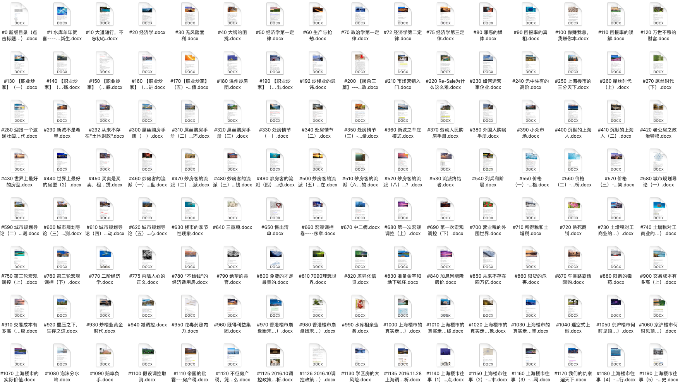

水库论坛欧成效/欧神精华文章（手校无删版）
这里是水库论坛创始人欧成效（俗称“欧神”）的全部精华文章，按照发布时间排序。
欧成效，笔名 yevon_ou，上海土著，复旦大学高材生。2002 年发现房产投资机会后，全力从事炒房，20 余年时间里积攒北京、上海两地民用住宅总面积达 6300 平。其核心思想是，货币贬值压力极大，房产是守护财富的不二法门，要尽可能的借入廉价货币，将其转换成房产。
欧成效本身不是大富大贵之家（但也不是贫贱之家，家学深厚，前妻是著名投资人朱啸虎的妹妹），自有资金并不充沛，早期通过信用卡接龙、抵押贷等方式获取廉价资金，之后通过开办炒房论坛、运营微信公众号，以及各地走穴演讲，凭借持续不断的内容输出获得现金流入。
欧成效虽然是炒房族，但是和“土豪团”、“贵妇团”不同，他强调的是广泛调研、深入看盘，买入价格足够低、有升值空间的房产，也就是圈内常说的“笋盘”。并且强调要纯粹投资房产，不为学区之类的变数较大的附属概念付费。
欧成效在市场营销和传播学方面有很深的造诣，文笔也非常不错，他的文章畅快淋漓、发人深省。这里收录的是欧成效亲手校对的文章底稿（包括被删除的敏感文章）。
原版文件打包出售（自行装订打印），一份 100 元，微信交易 lijiaocn（欧神的原始底稿，独家供应）
